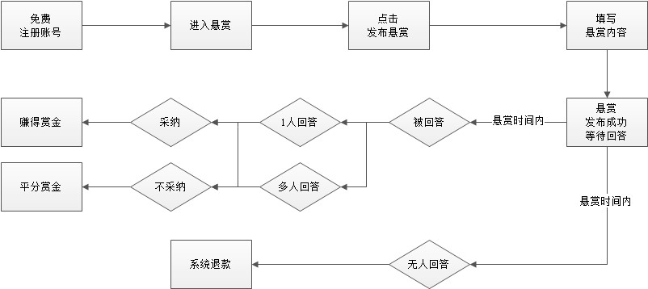

悬赏规则说明
规则正文：
欢迎您使用《圈乎》平台的悬赏功能（下称：本功能）！
您在使用本功能前请认真阅读如下规则或要求（下称：本规则）：
一、定义
1.1 悬赏：指圈乎为更快速解决用户间资源对接而推出的服务。该服务以独立的功能模块存在在圈乎平台上。以甲方付费，乙方收费的形式开展资源对接服务。 1.2 悬赏金额（下称“赏金”）：指圈乎用户在使用悬赏服务过程中通过使用圈乎平台提供的虚拟货币进行在线供需交易服务，达成双方同等价值交换目的的定义，赏金金额的10%作为平台服务费，当悬赏发起人发布悬赏后立即自动支付给平台，无论悬赏是否成功，平台服务费不退还； 1.3 征用：指悬赏发起用户对满足悬赏要求的回复或答案进行选用，并进行的选用操作，被征用答案可获取赏金； 1.4 查看：指悬赏成功后该悬赏答案已关闭，其他用户需付费查看进行的付费操作。二、悬赏发布说明
2.1 圈乎所有注册用户皆可参与悬赏发布、悬赏回答；
2.2 悬赏服务是区别且独立于圈乎其他服务的模块，内容不展示在其他功能模块及页面内，但其中所涉及的会员数据、资金数据等来源于圈乎平台；
1）悬赏发布和参与悬赏回答提交发布过程中不允许中断停止。
2）悬赏发布后页面内赏金显示金额为悬赏支付总金额的90%，即扣除平台服务费后的金额；
3）悬赏发起者不能参与自己发起的悬赏；
4）不可重复发布相同或相似度达80%以上的悬赏，管理员有权对该类悬赏进行相关惩罚处理。
5）悬赏发布后不能更改悬赏内容，可通过悬赏结束后再重新发起新的悬赏来间接延长悬赏时间。
二、悬赏发布流程
三、悬赏发布内容说明
1、悬赏说明：此项为必填。采用图文分排模式编辑，字数限制为10—500汉字，超出长度无法输入，建议在100个汉字以上。图片请使用宽度430像素、高度200像素、大小1M内的图片，支持jpg、jpeg、gif、png格式上传。图片请与悬赏内容相关。
2、悬赏金额：此项为必填。此处为APP内虚拟货币，最少1人民币（IOS：点），最多9999人民币（IOS：点）。虚拟货币可以通过圈乎内充值获取。
3、悬赏时间：此项为必选。可选时间为1天、3天、7天，三选一。每天24点为悬赏到期结束时间，根据发布悬赏时所选悬赏期限决定结束时间（如：某天任意时间发布悬赏，悬赏时间为1天，则第二天24点悬赏结束）
4、位置定位：此项为必填。可点击按钮自动定位当前发布位置，也可点击位置选择，在地图上选择详细位置。位置格式为：XX省XX市XX区（县）XX建筑（乡镇）。
四、参与悬赏内容说明
1、回答内容是用户向圈主提问后，圈主通过语音或图文方式对问题进行解答的内容；
2、若回答内容为语音方式编辑，语音最多为300秒，在发布之前可对语音进行重新录制；
3、若回答内容为图文混排模式，字数限制为10—500汉字，建议在100个汉字以上。可上传图片，图片最多为9张，请使用宽度430像素、高度200像素、大小1M内的图片，支持jpg、jpeg、gif、png格式上传。图片请与回答内容相关。
五、悬赏采纳规则与赏金分配说明
1、无人参与悬赏：悬赏发起人（下称“发起人”）若在悬赏时间期间无人参与悬赏，则平台抽取赏金的10%作为平台功能服务费，另外90%自动退回至发起人虚拟账户中；
2、有人参与，征用：发起人在悬赏时间内，可对通过悬赏获得的答案进行“征用”，征用后该答案须进入15天公示期，公示期内赏金（此赏金不包括平台服务费）被冻结，期间若无其他参与悬赏用户申诉，公示期结束后赏金解冻，自动进入该用户的虚拟账户内。
3、有人参与，不征用：发起人若在悬赏时间内不采纳答案，则所有回答进入公示期，公示期内赏金（此赏金不包括平台服务费）被冻结，公示期结束后赏金按照参与悬赏用户数采取均分原则，自动均分至所有参与者虚拟账户中，赏金金额采用四舍五入计算，最多取两位小数点，余数自动收归平台所有。
六、悬赏申诉说明
1、悬赏征用答案后，自动进入公示期。公示期间其他答案未被征用的用户可对被征用答案进行申诉处理，并提交相应申诉理由，由圈乎管理员进行查看并处理。
2、若申诉成功后且公示期结束后，赏金（此赏金不包括平台服务费）解冻并自动进入申诉人虚拟账户中，悬赏页面征用结果更换为申诉人答案。
3、若申诉不成功且公示期结束后，赏金（此赏金不包括平台服务费）继续按上述规则分配。
七、悬赏作弊责任
八、悬赏违约责任